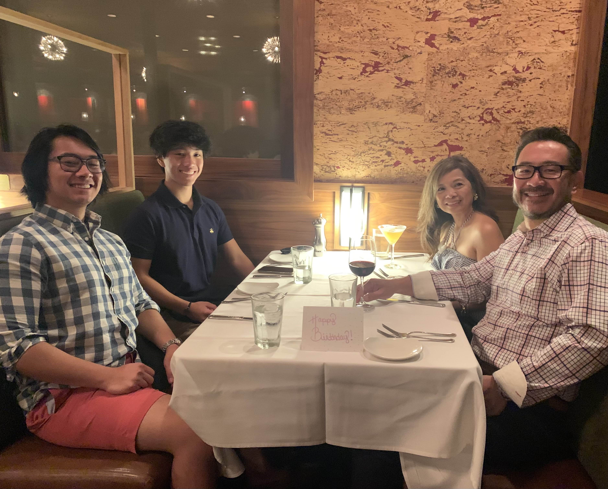
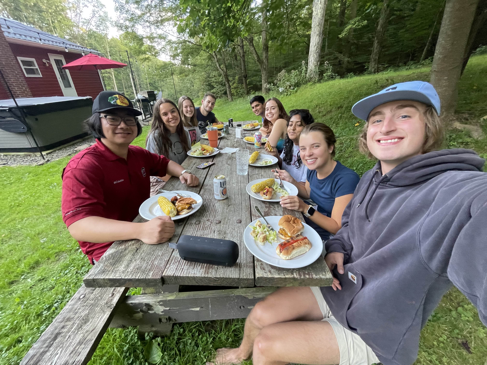
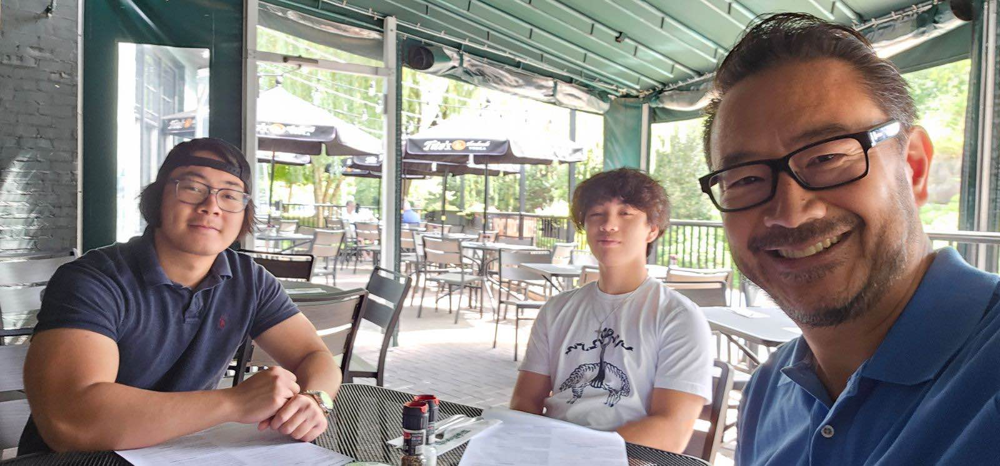

I'm Christian Bolinas
These are all old pictures-- I'm on my computer in my room all day every day. I'm the one in the awful red pants.
Disclaimer: I, and everyone else, was over the age of 21 in all these pictures containing alcohol.
About me:
I grew up in Wilmington, DE, about 40 minutes from Philadelphia.
Outside of computer-related things, I'm a brother of Beta Theta Pi. I was on exec, which wasn't fun.
I also like to play guitar, sing at Froggy-oke, or meander about the weight room when I'm not on the computer, which is pretty rare nowadays.
And I do the ol' sit-and-stand on Sunday mornings.
My favorite bands are Lynyrd Skynyrd and Metallica, my favorite show is Glee (I relate to Quinn the most), my favorite exercise is the bench press,
my favorite restaurant is Waffle House, and my favorite algorithm design paradigm is dynamic programming (but I like recursion in general).
Field of Study
I study computer science! This is my fourth semester taking CS classes.
My favorite class in the department has been CS 1510 Algorithm Design.
I'm the Bubba Blue of algorithms: combinatorial optimization algorithms, machine learning algorithms, heuristic algorithms for game-theoretic problems...
I switched from chemistry to computer science because I don't like chemistry, and a few of my buddies from high school studied CS and said I might like it.

Why UX Design and Usability Testing? Where do you see yourself within this nexus of UX design and product development?
People who can do "hard"-rated LeetCode problems are a dime-a-dozen.
People who can make software products that people, in real life, want to use, are rare. There's a real art to it.
I'm looking to learn how to make interfaces that make people in real life want to use my software!

Where do you want your knowledge and skills to take you?
I bring a problem-solving mindset to everything I do, whether it's
- increasing my bench press (305ish at one point, but I have a huge arch-- 275 with a flat back and a pause)
- playing guitar faster (I've hit sextuplets at 150 (15 notes per second) on a scale run before), or
- chipping away at the outrageous backlog of homework I always have.
Career-wise, I'm really not sure what I'd like to do, as long as I can solve interesting problems, whether that's computer problems, or math problems,
or people problems. I still haven't made a cent writing code.
What I really want to do most is computer science grad school for theory or machine learning,
but I need to pay off my loans, so that's not in the cards.


Why make a spark when you can light a fire?